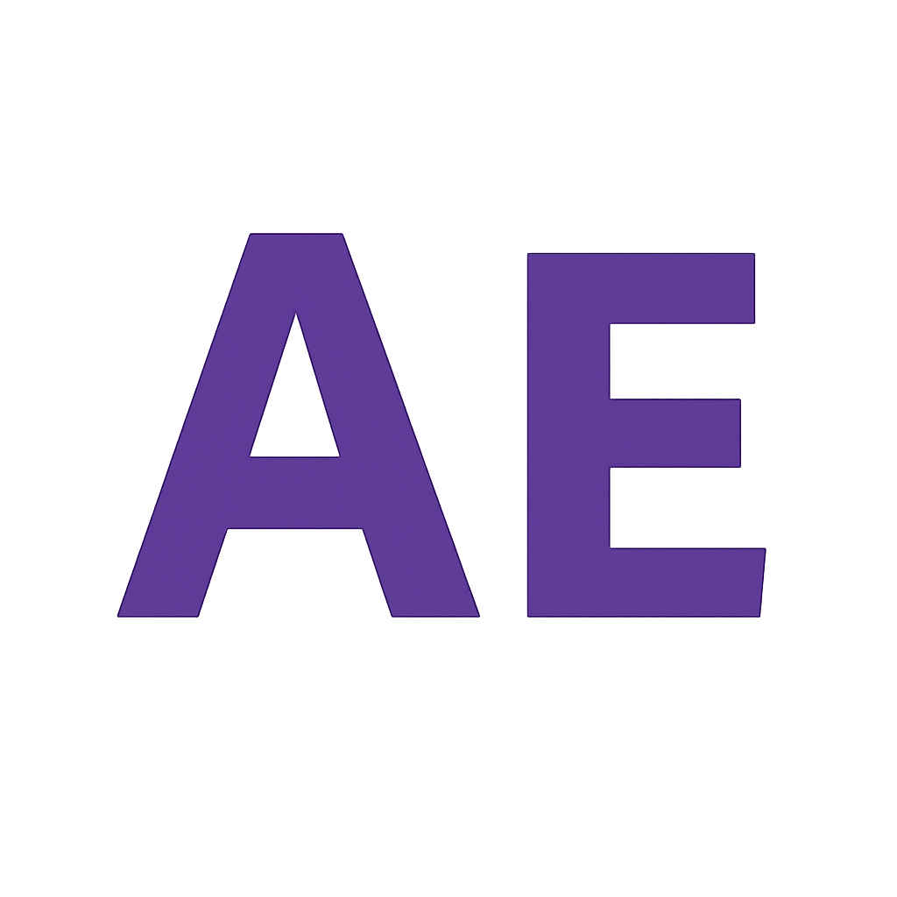

<header id="header" class="header dark-background d-flex flex-column"></header>
  <i class="header-toggle d-xl-none bi bi-list"></i>

  <div class="profile-img">
    
  </div>

  <a href="index.html" class="logo d-flex align-items-center justify-content-center">
    <!-- Uncomment the line below if you also wish to use an image logo -->
    <!--  -->
    <h1 class="sitename">Alnur Elberier</h1>
  </a>

  <div class="social-links text-center">
    <a href="https://www.github.com/alnurelberier" class="github"><i class="bi bi-github"></i></a>
    <a href="https://www.linkedin.com/in/alnurelberier/" class="linkedin"><i class="bi bi-linkedin"></i></a>
    <a href="https://www.youtube.com/@alnurelberier5406/" class="youtube"><i class="bi bi-youtube"></i></a>
    <a href="mailto:a.elberier@gmail.com" class="email"><i class="bi bi-envelope"></i></a>
  </div>

  <nav id="navmenu" class="navmenu">
    <ul>
      <li><a href="#hero" class="active"><i class="bi bi-house navicon"></i>Home</a></li>
      <li><a href="#about"><i class="bi bi-person navicon"></i> About</a></li>
      <li><a href="#resume"><i class="bi bi-file-earmark-text navicon"></i> Resume</a></li>
      <li class="dropdown"><a href="#portfolio"><i class="bi bi-images navicon"></i> <span>Portfolio</span> <i class="bi bi-chevron-down toggle-dropdown"></i></a>
        <ul>
          <li><a href="portfolio-details.html">Portfolio Details</a></li>
          <li><a href="service-details.html">Service Details</a></li>
          <li><a href="starter-page.html">Starter Page</a></li>
        </ul>
      </li>
      <li><a href="#personal-interests"><i class="bi bi-star navicon"></i> Interests</a></li>
      <li><a href="#contact"><i class="bi bi-envelope navicon"></i> Contact</a></li>
    </ul>
  </nav>

</header>
